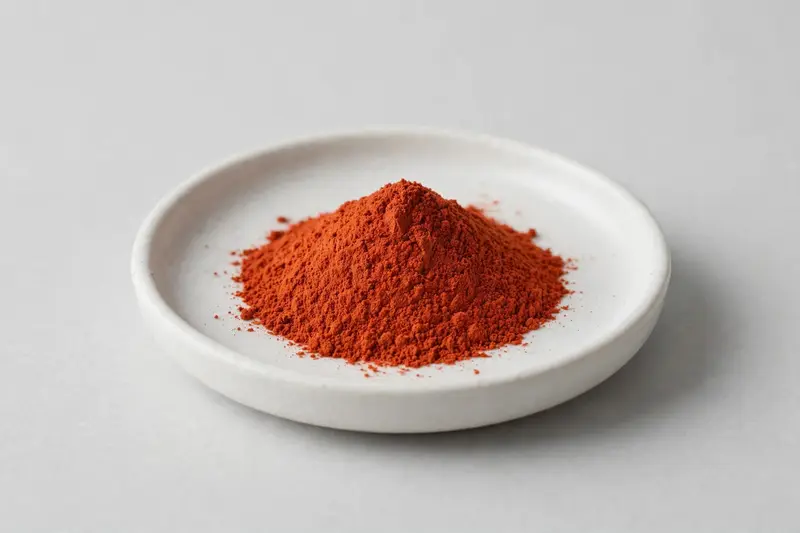

Carotenoid powder for eye-health-positioned supplement and beverage formulations, sourced through partner producers and confirmed against your target spec.

Overview
Zeaxanthin is a xanthophyll carotenoid obtained from marigold (Tagetes erecta) or via fermentation routes, typically standardized alongside lutein in eye-health-positioned formulas. Demand continues to build in capsule, gummy and functional beverage categories across overseas supplement brands. As a Xi'an-based trading company, we source through partner producers and confirm feasibility, grade and documentation once we receive your target specification.
Specifications below reflect commonly requested options in the market — not a stock list. Share your target spec and we'll confirm exactly what we can supply, honestly.
| Specification | Details |
|---|---|
| Botanical identity | Zeaxanthin powder (carotenoid, marigold- or fermentation-derived) |
| Marker compound | Commonly requested spec grades: 5%, 10%, 20% zeaxanthin; actual specs confirmed on inquiry |
| Appearance | Orange-red to dark reddish-orange fine powder |
| Mesh size | Typically 80–100 mesh (confirm per inquiry) |
| Testing | COA/TDS arranged on request; scope agreed per your spec |
Applications
Documentation
We don't claim in-house labs or certifications we don't hold. COA and TDS documents can be arranged on request, and testing scope is agreed against your specification before supply.
FAQ
Related products
Withania somnifera
Key marker: Withanolides
View specs →Rhodiola rosea
Key marker: Rosavins & Salidroside
View specs →Silybum marianum
Key marker: Silymarin
View specs →Theobroma cacao
Key marker: Theobromine Content
View specs →CDP-choline (cytidine diphosphate choline)
Key marker: Citicoline Content
View specs →Send your target spec and volumes — we'll respond with a tailored quotation.
Request a Quote